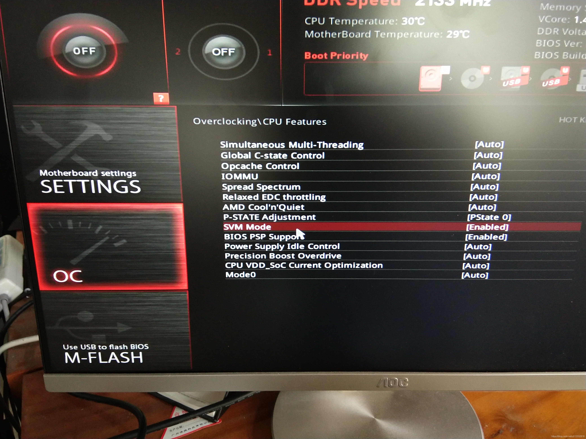
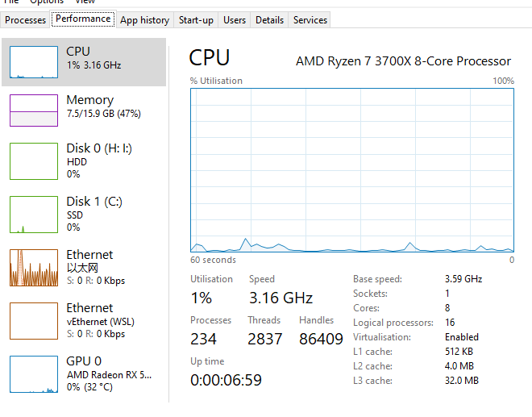

Win10安装docker
安装
主要是安装docker和wsl，先去docker官网 下载安装包，注意查看系统要求，虚拟化和安装WSL（Windows Subsystem for Linux） 。
具体可以看这个中文的：wsl官方文档 。
主要的坑在Bios启用虚拟化：3700x启用虚拟化：

看virtualisation：enabled状态

配置镜像加速
具体看这里镜像加速器
，对于使用 Windows 10 的用户，在任务栏托盘 Docker 图标内右键菜单选择 Settings，打开配置窗口后在左侧导航菜单选择 Docker Engine，在右侧像下边一样编辑 json 文件，之后点击 Apply & Restart 保存后 Docker 就会重启并应用配置的镜像地址了。
使用ubuntu连接docker
之前安装docker的时候安装了wsl2，安装了ubuntu，所以可以连接docker desktop，具体可以看微软官方地址 。
打开ubuntu，检查版本，输入：
docker --version
列出所有镜像
docker image ls
此时遇到了问题，Got permission denied while trying to connect to the Docker daemon socket at unix:///var/run/docker.sock: Get http://%2Fvar%2Frun%2Fdocker.sock/v1.24/containers/json: dial unix /var/run/docker.sock: connect: permission denied。
在这里 找到了解决办法。总结就是没有把你当前登录用户加入docker用户组。
- Create the docker group if it does not exist
$ sudo groupadd docker
- Add your user to the docker group.
$ sudo usermod -aG docker $USER
- Run the following command or Logout and login again and run (that doesn’t work you may need to reboot your machine first)
$ newgrp docker
- Check if docker can be run without root
$ docker run hello-world
Reboot if still got error
$ reboot
Taken from the docker official documentation: manage-docker-as-a-non-root-user